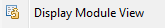
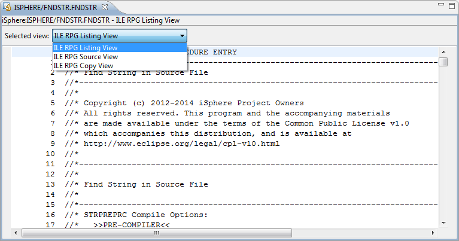

Menu option:

By default iSphere loads the first *LISTING view that is found. If no *LISTING view is available, the first *TEXT view is displayed.
You can change the displayed view with the Select view combo box at the top of the editor.

| Note: You must be authorized to execute the STRDBG and ENDDBG commands in oder to use this menu option. |